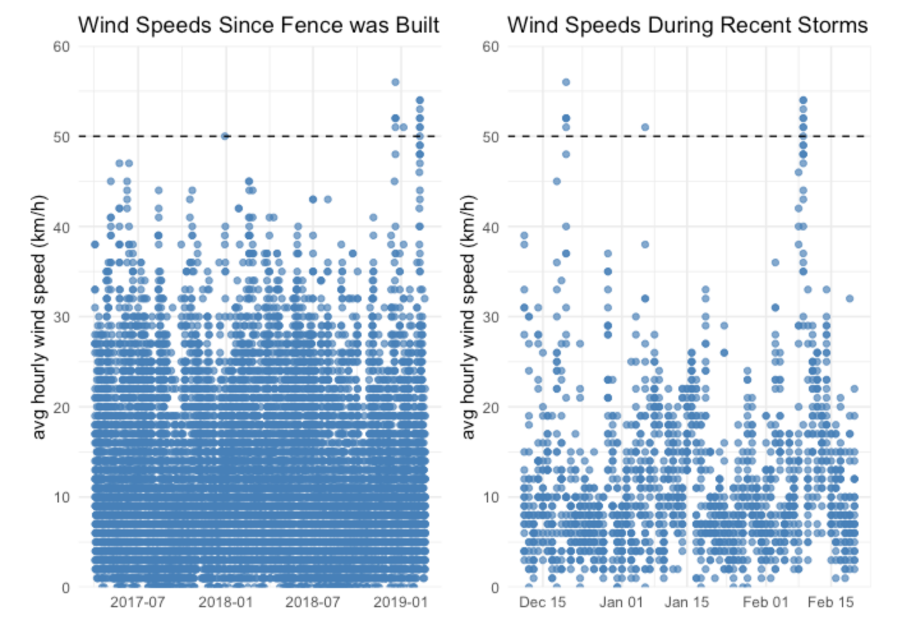

Mar 18, 2019
rOpenSci HQ
- Our next Community Call on Research Applications of rOpenSci Taxonomy and Biodiversity Tools is coming up next week! See our recent blog post for all the details.
- We’re planning a Community Call on Security for R with Ildi Czeller & Bob Rudis. Create Your Own Security Adventure by telling us what you want to know about the topic.
- Our citations Twitter bot @rocitations (src code) tweets new citations of rOpenSci software. You can now contribute citations. Citations live on GitHub at ropenscilabs/ropensci_citations. Here’s an example pull request demonstrating how it’s done: https://github.com/ropenscilabs/ropensci_citations/pull/1. If you just want to look at the citations, peruse the tsv file.
Software 📦
CRAN:  GitHub:
GitHub: 
New packages
- The first version (
v0.2.0) ofemldis on CRAN - ecological metadata as linked data. The package recently went through rOpenSci software review, check out the review. Checkout the vignette to get started.

- The first version (
v0.2.1) oftacmagicis on CRAN - positron emission tomography time-activity curve analysis. The package recently went through rOpenSci software review, check out the review. Checkout the vignette to get started.
New Versions
- A new version (
v0.25.1) ofgit2ris on CRAN - an interface to the libgit2 library, a pure C implementation of the Git core methods. See the release notes for changes. Checkout the README to get started.
fixed significant warning from ‘R CMD check’
- A new version (
v0.4.8) ofiheatmapris on CRAN - Interactive and complex heatmaps. See the release notes for changes. Checkout the docs to get started.
fix for sample; fixes for
add_col_groups,iheatmapr_event,show_colorbar,save_iheatmap - A new version (
v0.15.6) ofDataPackageRis on CRAN - construct reproducible analytic data sets as R packages. See the release notes for changes. Checkout the vignettes to get started.
fixes for writing to users dir; fixes to
update_news() - A new version (
v0.1.7) ofcodemetaris on CRAN - Generate codemeta metadata for R packages. See the release notes for changes. Checkout the docs to get started.
jsonldto Suggests;write_codemeta()gains new arg.use_githook;create_codemeta()&write_codemeta()gain new arg.use_filesize - A new version (
v3.0.3) ofrfishbaseis on CRAN - interface to Fishbase data. See the release notes for changes. Checkout the docs to get started.
fix bug in sealifebase name resolution
- A new version (
v2.1) ofspellingis on CRAN - tools for spell checking. See the release notes for changes. Checkout the README to get started.
pre-filter script/style/img tags when checking html files; treat input files in
spell_check_files()as UTF-8 on all platforms; fix sorting bug inspell_check_files() - A new version (
v7.0.0) ofdrakeis on CRAN - a pipeline toolkit for reproducible computation at scale. See the release notes for changes. Checkout the docs to get started.
many breaking changes; some bug fixes; new features including DSL for generating large plans; many enhancements including a large speed boost
- A new version (
v2.2) ofpdftoolsis on CRAN - Text extraction, rendering and converting of PDF documents. See the release notes for changes. Checkout the README to get started.
import new qpdf pkg; document new PPA for Ubuntu 16.04 and 18.04 with poppler 0.74
- A new version (
v1.3.8) ofMODIStspis on CRAN - Automate Download and Preprocessing of MODIS Land Products Data. See the release notes for changes. Checkout the docs to get started.
fix for incorrect application of scale/offset values on GDAL verions > 2.3; added support for more MODIS products
- A new version (
v0.2.1) offingertipsRis on CRAN - Fingertips data for public health http://fingertips.phe.org.uk/. See the release notes for changes. Checkout the vignettes to get started.
change in
deprivation_decile(); bug fix forfingertips_data() - A new version (
v1.1) ofqpdfis on CRAN - Split, combine and compress PDF files. See the release notes for changes. Checkout the README to get started.
add configure script to allow building with system libqpdf; fix solaris build
Archived
- The
rdefrahas been archived on CRAN - we’re hoping to get it back on CRAN soon.
Software Review ✔
We accept community contributed packages via our onboarding system - an open software review system, sorta like scholarly paper review, but way better. We’ll highlight newly onboarded packages here. A huge thanks to our reviewers, who do a lot of work reviewing (see the blog post on our review system), and the authors of the packages!
If you want to be a reviewer fill out this short form, and we’ll ping you when there’s a submission that fits in your area of expertise.
The following two packagess were recently submitted:
- MtreeRing > A Shiny Application for Automatic Measurements of Tree-Ring Widths on Digital Images
- Author: Jingning Shi
- Issue: ropensci/onboarding#287
- Reviewers: not yet assigned
- grainchanger > Moving-Window and Direct Data Aggregation
- Author: Laura Jane Graham
- Issue: ropensci/onboarding#289
- Reviewers: not yet assigned
On the blog
Community calls
Stefanie Butland wrote about our upcoming community call: Community Call - Research Applications of rOpenSci Taxonomy and Biodiversity Tools.
Tech notes
Will Landau wrote about a new version (v7) of drake in a tech note drake transformed. drake is an R-focused pipeline toolkit for reproducibility and high-performance computing.
Use Cases
The following eight works use/cite rOpenSci software:
- Karger et al. used CoordinateCleaner in their article Why tree lines are lower on islands-Climatic and biogeographic effects hold the answer 1
- Olsson-Collentine et al. used rcrossref in their paper The Prevalence of Marginally Significant Results in Psychology Over Time 2
- Poulin et al. used rentrez in their paper on Taxonomic and geographic bias in the genetic study of helminth parasites 3
- Piñar et al. used rgbif in their article A time travel story: metagenomic analyses decipher the unknown geographical shift and the storage history of possibly smuggled antique marble statues 4
- Dreyer et al. used rgbif in their article Ligustrum lucidum W. T. Aiton (broad-leaf privet) demonstrates climatic niche shifts during global-scale invasion 5
- Ludt et al. used rgbif in their paper Genomic, ecological, and morphological approaches to investigating species limits: A case study in modern taxonomy from Tropical Eastern Pacific surgeonfishes 6
- Peruffo used skimr in their thesis on Improving predictive maintenance classifiers of industrial sensors’ data using entropy. A case study 7
- Free et al. used rfishbase in their paper Impacts of historical warming on marine fisheries production 8
In The News
We’ve introduced a template in our UseCases category in our discussion forum to make it easy to share how folks are using rOpenSci tools. Check out a recent one by Sharla Gelfand #visdat, #skimr, and #assertr use case: Exploring and understanding a new data set to find top 5 causes for delays on the TTC subway and SRT in 2018.
Stephanie Hazlitt wrote a blog post using the rOpenSci package weathercan triggered by her fence being blown over!

Guangchuang Yu is writing a bookdown book wrote Data Integration, Manipulation and Visualization of Phylogenetic Trees, in which he includes a section of a chapter on the rOpenSci package treeio
Call For Contributors
Part of the mission of rOpenSci is making sustainable software that users can rely on. Some software maintainers need to give up maintenance due to a variety of circumstances. When that happens we try to find new maintainers. We’ve had three recent examples of maintainer transitions within rOpenSci:
- RSelenium: now maintained by Ju Kim
- chromer: now maintained by Paula Andrea
- qualtRics: now maintained by Julia Silge
We’ve got three packages in need of new maintainers:
- webchem: The current maintainer of webchem, Eduard Szöcs, is looking for a new maintainer. See issue #155. Do ping Eduard in that issue and/or email us at info@ropensci.org
- rsnps: The current maintainer would like to hand it over to someone with more expertise in the domain. Please get in touch with Scott if you’re interested.
- rdpla: The current maintainer would like to hand it over to someone with more expertise in the domain. Please get in touch with Scott if you’re interested.
Keep up with rOpenSci
- Mailing list: Sign up with an email address to get this newsletter sent to your inbox -> ropensci.org/#subscribe
- Alternatively, you can subscribe to this newsletter via our XML feed at https://news.ropensci.org/feed.xml or our JSON feed at https://news.ropensci.org/feed.json
- rOpenSci on Twitter: @ropensci
- The rOpenSci blog at ropensci.org/blog - you can subscribe in any RSS aggregator, or manually via https://ropensci.org/feed.xml. We also announce new blog posts on our Twitter account.
Footnotes
-
Karger, D. N., Kessler, M., Conrad, O., Weigelt, P., Kreft, H., König, C., & Zimmermann, N. E. (2019). Why tree lines are lower on islands-Climatic and biogeographic effects hold the answer. Global Ecology and Biogeography. https://doi.org/10.1111/geb.12897 ↩
-
Olsson-Collentine, A., van Assen, M. A. L. M., & Hartgerink, C. H. J. (2019). The Prevalence of Marginally Significant Results in Psychology Over Time. Psychological Science, 095679761983032. https://doi.org/10.1177/0956797619830326 ↩
-
Poulin, R., Hay, E., & Jorge, F. (2019). Taxonomic and geographic bias in the genetic study of helminth parasites. International Journal for Parasitology. https://doi.org/10.1016/j.ijpara.2018.12.005 ↩
-
Piñar, G., Poyntner, C., Tafer, H., & Sterflinger, K. (2019). A time travel story: metagenomic analyses decipher the unknown geographical shift and the storage history of possibly smuggled antique marble statues. Annals of Microbiology. https://doi.org/10.1007/s13213-019-1446-3 ↩
-
Dreyer, J. B. B., Higuchi, P., & Silva, A. C. (2019). Ligustrum lucidum W. T. Aiton (broad-leaf privet) demonstrates climatic niche shifts during global-scale invasion. Scientific Reports, 9(1). https://doi.org/10.1038/s41598-019-40531-8 ↩
-
Ludt, W. B., Bernal, M. A., Kenworthy, E., Salas, E., & Chakrabarty, P. (2019). Genomic, ecological, and morphological approaches to investigating species limits: A case study in modern taxonomy from Tropical Eastern Pacific surgeonfishes. Ecology and Evolution. https://doi.org/10.1002/ece3.5029 ↩
-
Peruffo, E. Improving predictive maintenance classifiers of industrial sensors’ data using entropy. A case study. http://trap.ncirl.ie/3429/1/eleonoraperuffo.pdf ↩
-
Free, C. M., Thorson, J. T., Pinsky, M. L., Oken, K. L., Wiedenmann, J., & Jensen, O. P. (2019). Impacts of historical warming on marine fisheries production. Science, 363(6430), 979–983. https://doi.org/10.1126/science.aau1758 ↩